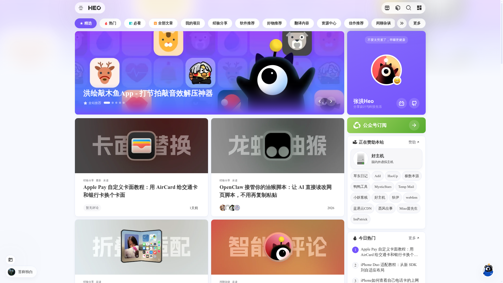
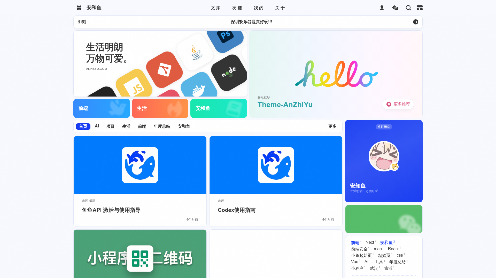
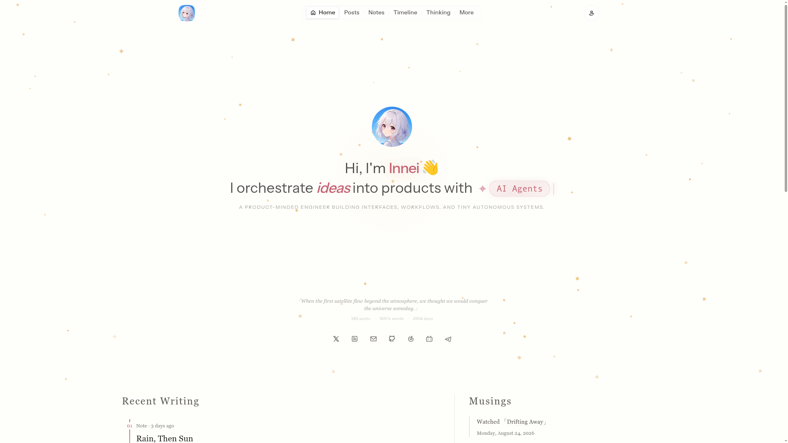
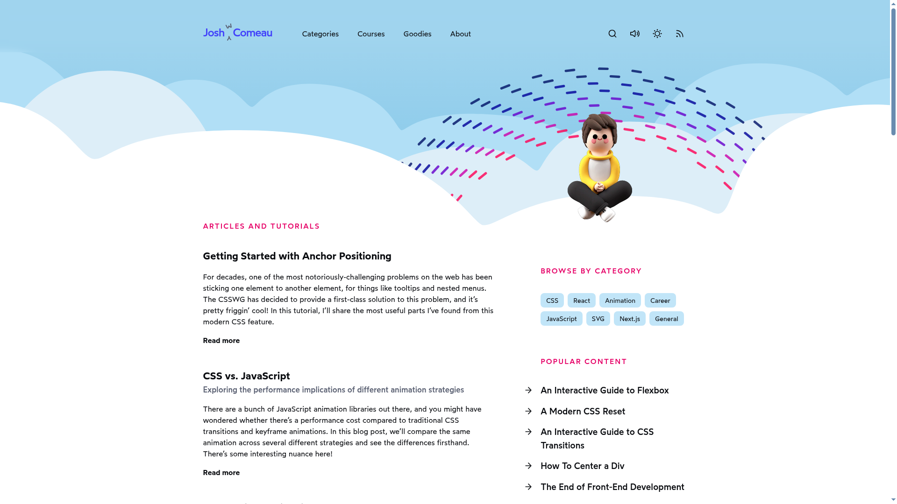
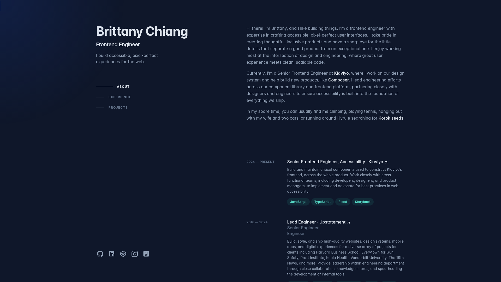
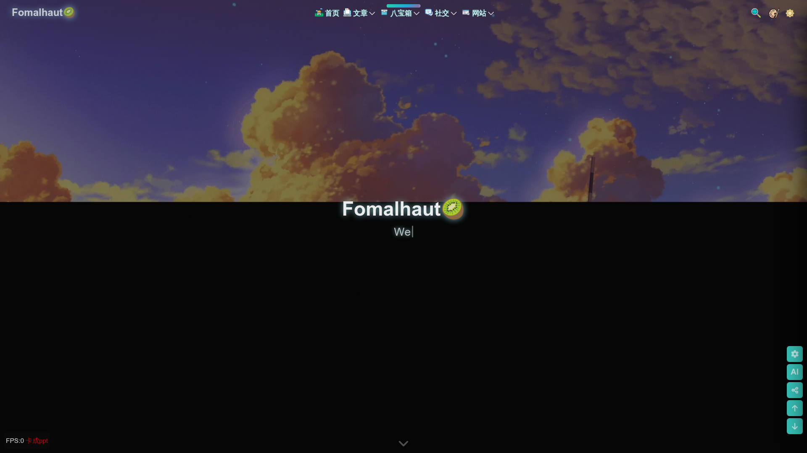
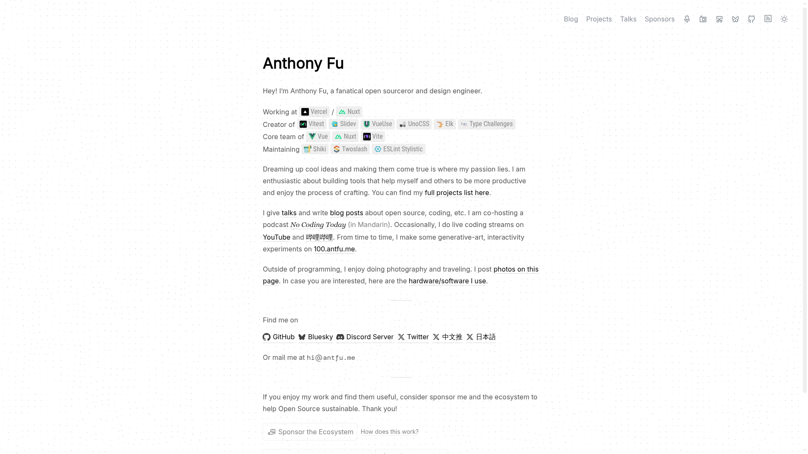

01图文卡片 · 内容丰富优先看

查看截图 ↗张洪 Heo
blog.zhheo.com/横向分类、精选大图、双列文章卡片和个人侧栏同时出现，首页一打开就有具体内容可看。
- 看哪里
- 重点看分类切换、文章封面的统一处理，以及「我的项目」如何和文章共处。
- 与你的需求
- 适合你的笔记 + 项目双用途。精选位置可以展示项目，正文区域持续更新技术笔记。
- 取舍
- 需要一套统一的封面素材；栏目和侧栏可以按实际内容精简。
LOOK AT REAL BLOGS FIRST
这一轮用真实网站校准视觉方向。下面是实际首页截图、原站入口，以及可以借鉴到「学习笔记 + 项目展示」上的具体设计。建议先看前三个中文个人博客，再看技术文章和作品集的组织方式。

查看截图 ↗横向分类、精选大图、双列文章卡片和个人侧栏同时出现，首页一打开就有具体内容可看。

查看截图 ↗上方用多个大小不同的模块组合个人介绍、分类入口与推荐内容，下方承接文章卡片和个人资料。

查看截图 ↗
查看截图 ↗有辨识度的插画页头，加上清晰的文章摘要、分类和热门内容。文章中的交互示例是这个博客最值得体验的部分。

查看截图 ↗深蓝底色，左侧个人身份与章节导航，右侧组织介绍、经历和项目。它主要是个人作品集。

查看截图 ↗大幅背景图、个性化导航和丰富的兴趣入口，包含算法、计算机基础等学习笔记，也有音乐、画廊等个人内容。

查看截图 ↗主页把个人介绍与真实项目直接连接起来，并把博客、项目、演讲、照片分成清晰入口。整体外观非常克制。
把首页的主要面积交给具体内容：精选项目、带摘要的技术笔记、清晰分类、个人资料。参考 Heo 和安知鱼的内容组织，可以让首页在文章逐渐增加后仍然好逛。
笔记详情参考 Josh Comeau 的阅读与讲解方式，项目页参考 Brittany Chiang 的缩略图、简介、技术标签和入口。若更喜欢个人空间的氛围，再看 Innei 的文章、日常与时间线如何组合。
这些只是基于现有需求的建议。选出最喜欢的 1–2 个站点后，再围绕它们做下一版具体页面；框架可以服务于选定的设计。
截图来自本次 Firecrawl 对公开页面的抓取，仅作本地设计讨论；网站内容与图像归原作者所有。抓取可能有缓存、地区语言差异或动画加载不完整的情况。
“参考”按设计与需求匹配度筛选，未核验访问量排名。选取线索包括 安知鱼主题社区、Innei / Shiro、Josh 对 Brittany 作品集的评价。
研究记录与来源 · 返回之前的三版预览